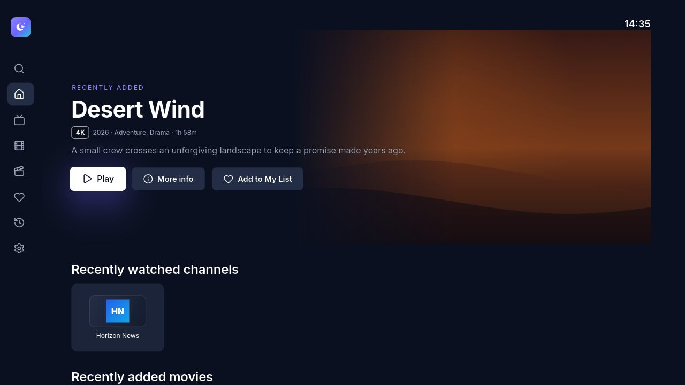
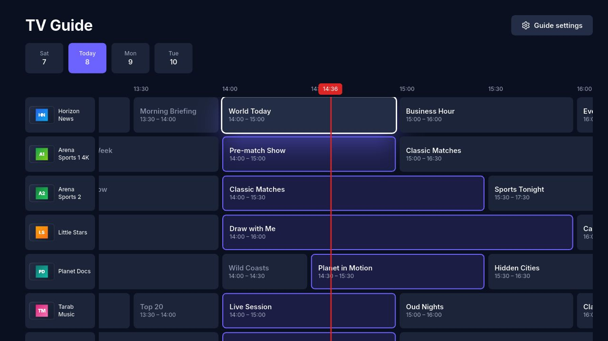
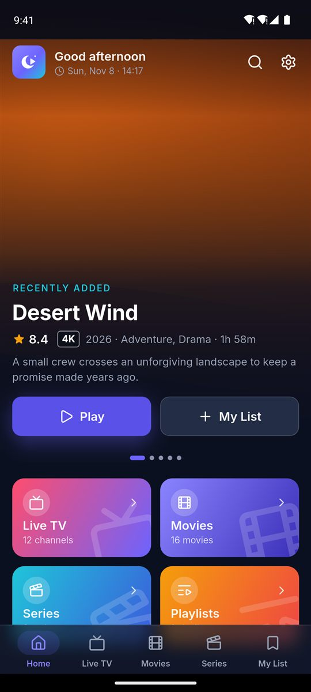
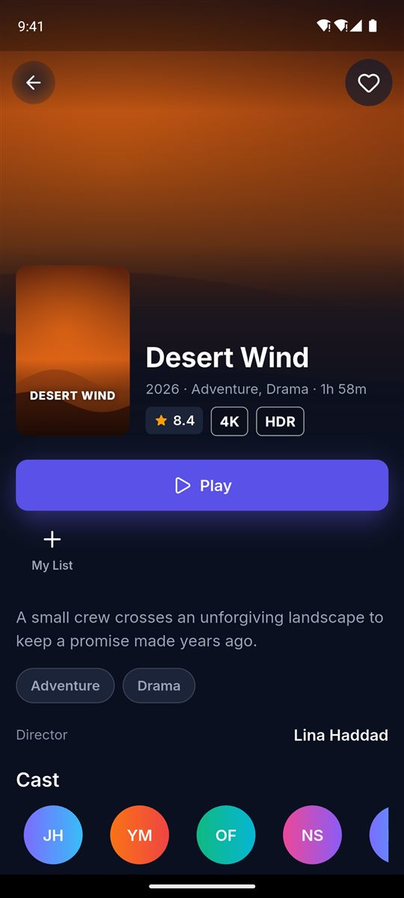

Bring your own playlist
Add an Xtream Codes account, an M3U link or an M3U file from your provider and get a cinema-style library: Live TV, Movies and Series with posters, seasons and continue watching.
A fast, private player for your own IPTV playlists.
For Android phones, tablets, Android TV and Google TV. In English and Arabic.




Add an Xtream Codes account, an M3U link or an M3U file from your provider and get a cinema-style library: Live TV, Movies and Series with posters, seasons and continue watching.
Full TV guide with what’s on now and next, today’s schedule for every channel, and catch-up where your provider supports it.
Clear focus, number keys to jump to a channel, the Guide button, and an on-screen keyboard that works with the remote.
Chromecast from your phone, picture-in-picture, and resume where you stopped on every title.
No MAC address, no website activation, no device codes. Install it and add your playlist.
Your playlists, logins and history stay on your device. No ads, no tracking, no analytics.
SAHRA Player is a media player. It does not provide any channels or content.
Questions or problems: ahmedemad2210@gmail.com